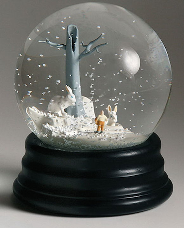
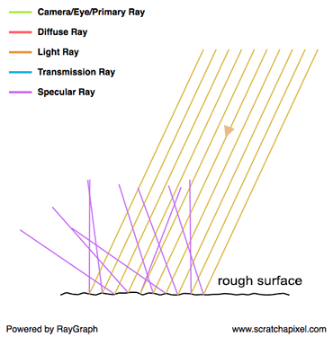
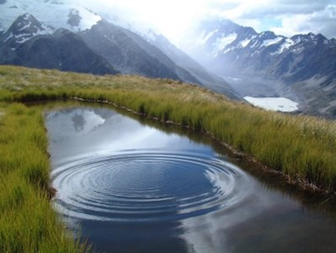
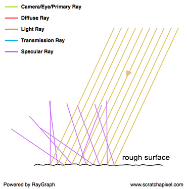
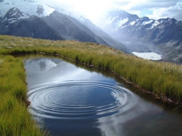
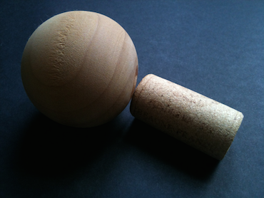
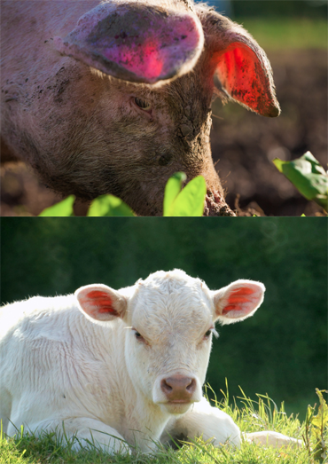
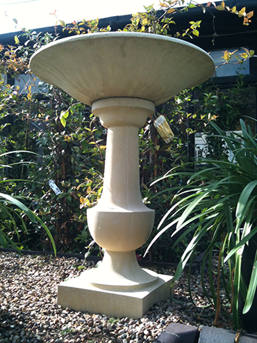
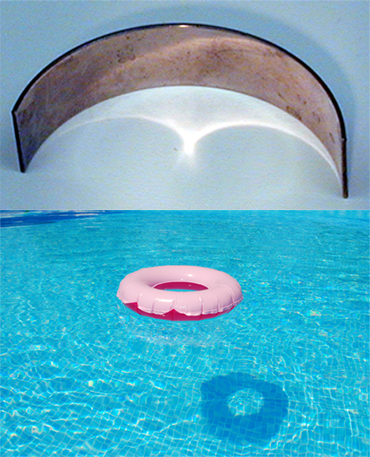
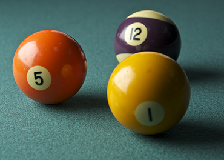

We finished the last chapter on the idea that ray tracing was better than rasterisation to simulate important and common shading and lighting effects (such as reflections, soft shadows, etc.). Not being able to simulate these effects, simply means your image will lack the photo-realism we strive for. But before we dive into this topic even more, let's have a look at some images from the real world to better understand what these effects are.
Reflection

When light comes in contact with a perfect mirror-like surface, it is reflected back into the environment in a predictable direction. This new direction can be computed using the law of reflection. This law states that, like a tennis ball bouncing off the floor, a light ray changes direction when it comes in contact with a surface, and that the outgoing or reflected direction of this ray is a reflection of the incoming or incident direction about the normal at the point of incidence. A more formal way of defining the law of reflection is to say that a reflected ray always comes off the surface of a material at an angle equal to the angle at which the incoming ray hit the surface. This is illustrated in the image on the right, where you can see that the angle between the normal and the incident vector, is equal to the angle between the normal and the outgoing vector. Note that even though we used a water surface in the picture as an example of reflective surface, water and glass are actually pretty poor mirrors compared to metals particularly.
Transparency
In the case of transparent objects (imagine a pane of glass for example), light is reflected and refracted. The term transmitted is also often used in place of refracted, but the terms means two slightly different things. By transmitted we mean, a fraction of the incident light enters the object on one side, and leaves the object on the other side (which is why we see objects through a window). However, as soon as it comes in contact with the surface of a transparent object, light changes direction, and this is what we call refraction. It is the effect of light rays being bent as they travel from one transparent medium such as air to another such as water or glass (it doesn't matter if it goes from air to water or water to air, light rays are still being bent in one way or another). As with reflection, the refraction direction can be computed using the Snell's law. How much light is being reflected vs refracted is given by the Fresnel's equation. These two equations are very important in rendering. The graph on the right, shows a primary ray going through a block of glass. The ray is refracted, then travels through the glass, is refracted again when it leaves the glass and eventually hits the surface below it. If that surface was an object, then this is what we would see through the glass.
Glossy or Specular Reflection
 



A glossy reflection is a material which is not perfectly reflective (like a mirror) nor perfectly diffuse. It is obviously somewhere in between, where this "in between" can either be anywhere between almost perfectly reflective (as in the case of mirror like surface) and almost perfectly diffuse. Glossiness of a surface is also some times referred to as its roughness (the two terms are antonymous) and specular reflection is often used instead of glossy reflection. You will often come across these two terms in computer graphics. Why do we speak of roughness then? To behave like a mirror, the surface of an object needs to be perfectly smooth. While many objects may appear flat and smooth in appearance (with the naked eye), looking at their surface under a microscope, reveals a very complex structure, which is not flat or smooth at all. In computer graphics we often like to describe rough surfaces, using the image of a surface made of lots of microfacet, where each one of these micro facets is orientated in a slightly different direction and act on its own as a perfect mirror. As you can see in the adjacent image, when light bounces off from one of these facets, it is reflected in a slightly different direction than the mirror direction. The amount of variation between the mirror direction and the ray outgoing direction, depends on how strongly the facets deviate from an ideal smooth surface. The stronger the deviation, the greater the difference, on average, between the ideal reflection direction and the actual reflection directions. Visually, rather than having a perfect image of the environment reflected off of a mirror like surface, this image is slightly deformed (or blurred if you prefer). We have all seen how ripples caused by a pebble thrown into the water, changes the sharp image reflected by a perfectly still water surface. Glossy reflections are similar to that: a perfect reflection deformed or blurred by the microscopic irregularities of a surface.
In computer graphics, we often speak of scattering. Because rather than being all reflected in the same direction, rays are scattered in a range of directions around the mirror direction (as shown in the last image on the right).
Diffuse Reflection
On the other extreme of a perfectly reflective surface, is the concept of diffuse surfaces. When we talked about specular reflection, we mentioned that light rays were scattered around the mirror direction. But for diffuse surfaces, rays are scattered even more, in fact so much, that they are reflected in all sort of random directions. Incident light is equally spread in every directions above the point of incidence and as a result, a diffuse surface appears equally bright from all viewing directions (again that's because the incident light is equally spread in every direction as a result of being strongly scattered). Two things can cause a surface to be diffuse: the surface can either be very rough, or made up of small structures (such as crystals). In the latter case, rays get trapped into these structures and are reflected and refracted by them a great number of times before they leave the surface. Each reflection or refraction with one of these structures changes the light direction, and it happens so many times that when they finally leave the surface, rays have a totally random direction. What we mean by random is that the outgoing direction has no correlation whatsoever with the incident direction. Or to put it differently, the direction of incidence has no effect on the light rays outing directions (which is not the case of specular surfaces), which is another interesting property of diffuse surfaces.
Subsurface Scattering
Subsurface scattering is the technical term for translucency. Translucent surfaces in a way are surfaces which are not completely opaque nor completely transparent. But in fact, the reason why objects are translucent has little to do with transparency. The effect is clearly visible when wax, a small object made out of jade or marble, or when a thin layer of organic material (skin, leaves) is strongly illuminated from the back. Translucency is the effect of light traveling through the material, changing directions along it is way until and leaving the object in a different location and in a different direction than the point and direction of incidence. Subsurface scattering is rather complex to simulate.
Indirect Diffuse
Some surfaces of the ornemental object in the centre of the adjacent images, are not facing any direct light at all. They are not facing the sun and they are not even facing up the sky (which we can look at as a very large light source). And yet, they are not completely black. How come? This happens because the floor which is directly illuminated by the sun, bounces light back into the environment and some of that light eventually illuminates parts of the object which are not receiving any direct light from the sun. Because the surface receives light emitted by light sources such as sun indirectly (through other surfaces), we speak of indirect lighting. The term diffuse, means simply that the object light bounces from, are diffuse.
Indirect Specular or Caustics
Similarly to the way diffuse objects reflect light that illuminates other objects in their surrounding, reflective objects too can indirectly illuminate other objects by redirecting light in other parts of their environment. Lenses or waves at the surface of water also focus light rays within singular lines or patterns which we call caustics (we are familiar with the dancing pattern of light at the bottom of a pool exposed to sunlight). Caustics are also frequently seen when light is reflected off gf the mirrors making up the surface of disco balls, reflected off of the surface of windows in summer, or when a strong light shines upon a glass object.
Soft Shadows
Most of the effects we described so far have something to do with the object's material properties. Soft shadows on the other hand have nothing to do with materials. Simulating them is only a geometric problem involving the objects and light sources shape, size and location in space.
Don't worry if you are curious about knowing and understanding how all these effects can be simulated. We will study them all in due time. At this point of the lesson, it's only important to look at some images of the real world, analyse what lighting/shading effects we can observe in these images, so that we can reproduce them later on.
Remember from this chapter, that a diffuse surface appears equally bright from all viewing directions, but a specular surface's brightness varies with the viewing direction (if you move around a mirror, the image you see in the mirror will change). We say that diffuse interaction is view-independent while specular interaction is view-dependent.
Light Transport and Shading: Two Related but Different Problems
The other reasons why we have been quickly reviewing these effects is for you to realise two things:
- The appearance of objects, only depends on the way light interacts with matter and travels trough space.
- All these effects can be broadly divided in two categories:
- Some effects relate to the way object appear.
- Some effects relate to how much light an object receives.
In shading we study the way light interacts with matter (or the other way around). In other words, it looks at everything that happens to light from the moment it reaches an object, to the moment it leaves it.
Light transport is the study of what happens to light when it bounces from surface to surface. How is it reflected from various surfaces? How does the nature of this reflection change with the type of material light is reflected from (diffuse, specular, etc.)? Where does light go? Is it blocked by any geometry on its way to another surface? What effect does the shape of that blocker has on the amount of light an object receives? More generally, light transport is interested in the paths light rays are to follow as they travel from a light source to the eye (which we call light paths).
Note that boundary between shading and light transport is very thin. In the real world, there would actually be not distinction to be made. It's all about light traveling and taking different paths depending on the object it encounters along its way from the light source to the eye. But, it is convenient in computer graphics to make the distinction between the two because they can't be simulated efficiently using the same approach. Let's explain.
If we could replicate the world in our computer program down to the atom, code some basic rules to define the way light interacts with these atoms, we would just have to wait for light to bounce around until it reaches our eye, to generate a perfect image of the world. Creating such a program would be ideal but unfortunately, it simply can't be done with our current technology. Even if you had enough memory to model the world at the atomic level, you'd not have enough computing power to simulate the path of the zillions of light particles (photons) traveling around us and interacting a zillions times with matter almost instantaneously before it reaches the eye, in anything less than an infinite amount of time. Therefore, a different approach is required. What we do instead is looking at what takes the most time in the process. Well clearly, light traveling in straight paths from one surface to another is pretty basic, while what actually happens when light reaches a surface and interacts with it, is terribly complex (and is what would take the most time to simulate).
Thus, in computer graphics, we artificially make a distinction between shading and light transport. The art of shading is to design mathematical models that approximate the way light interacts with matter, at a fraction of the time it would take if these interactions where to be physically simulated. On the other hand, we can afford to simulate the path of light rays as they go from on surface to another, as nothing complex happen to them on their way. This distinction allows to design strategies adapted to solving both problems (shading and light transport) independently.
Simulating light transport is easier than simulating the interaction of light with matter, though, we didn't say it was easy. Some types of inter-reflection are notably hard to simulate (caustics for instance, we will explain why in the next chapter), and while designing good mathematical models to emulate the way light interacts with surfaces is hard, designing a good light transport algorithm can be challenging on its own (as we will see in the next chapter).
Global Illumination
But let's step back a little. While you may think (it's often a misconception) that most surfaces are visible because they receive light directly from a light source, there's actually about as many situations (if not many more) in which, light only appears visible as result of being illuminated indirectly by other surfaces. Look around you and just compare the amount of objects or roughly the ratio between the areas which are directly exposed to a light source (the sun, artificial lights, etc.), over areas which are not exposed directly to a light source and receive light reflected by other surface. Indirect lighting plays such an important part in the world as we see it, that if you don't simulate it, it will be hard to make your images look photo-real. When in rendering we can simulate both direct lighting and indirect lighting effects, we speak of global illumination. Ideally, in lighting, and rendering more generally, we want to simulate every possible lighting scenario. A scenario is defined by the shape of the object contained in the scene, their material, how many lights are in the scene, their type (is it the sun, is it a light bulb, a flame), their shape, and finally how objects are scattered throughout space (which influences how light travels from surface to surface).
In CG, we make a distinction between direct and indirect lighting. If you don't simulate indirect lighting you can still see objects in the scene due to direct lighting, but if you don't simulate direct lighting, then obviously the image will be black (in the old days, direct lighting also used to be call local illumination in contrast to global illumination which is the illumination of surfaces by other surfaces). But why wouldn't we simulate indirect lighting anyway?
Essentially because it's slow and/or not necessarily easy to do. As we will explained in detail in the next chapter, light can interact with many surfaces before it reaches the eye. If we consider ray tracing for now, we also explained that what is the most expensive to compute in ray tracing is the ray-geometry intersection test. The more interactions between surfaces you have to simulate, the slower the render. With direct lighting you only need to find the intersection between the primary or camera or eye rays (the rays traced from the camera) and the geometry in the scene, and then cast a ray from each one of these intersections to the lights in the scene (this ray is called a shadow ray). And this is the least we need in order to produce an image (we could ignore shadows, but shadows is a very important visual clue that helps us figuring out where objects are in space particularly in relation with each other. It also helps to recognise objects' shapes, etc.). If we want to simulate indirect lighting, many more rays need to be cast into the scene to "gather" information about the amount of light that bounces off the surface of other objects in the scene. Simulating indirect lighting on top of direct lighting requires not twice as many rays (if you compare than number with the number of rays used to simulate direct lighting), but probably of few orders of magnitude more. And since the ray-object intersect test is expensive, as mentioned before, the more rays, the slower the render. Thus computing indirect diffuse is not making your render twice as long but usually many more times as long than when you simulate direct lighting only. To make things worse, note that when we compute indirect lighting we cast new rays from a point P in the scene to gather information about the amount of light reflected by other surfaces towards P. What's interesting is that this actually requires that we compute the amount of light arriving at these other surfaces as well, which means that for each one of the surface we need to compute the amount of light reflected towards P, we also need to compute direct and indirect lighting, which means spawning even more rays. As you may have noticed, this effect is in fact recursive. Which is again why indirect lighting is a potentially very expensive effect to simulate.
Why is it difficult? In fact it's pretty straightforward if you use ray tracing (but eventually expensive). Ray tracing as we will explain in the next paragraph is pretty natural way of thinking and simulating the way light flows in the natural world. It's easy from a simulation point of view because it offers a simple way to "gather" information about light reflected off of surfaces in the scene. If your system supports the ability to compute the intersection of rays with geometry, then you can use it to either solve the visibility problem or simulate direct and indirect lighting. However, if you use rasterisation, how do you gather that information? It's a common misbelief to think that you need ray tracing to simulate indirect lighting, this is not true. Many alternative to ray tracing for simulating indirect lighting exist (point cloud based, photon maps, virtual point lights, shadow maps, etc. Radiosity is another method to compute global illumination. It's not very much used anymore these days but was very popular in the 80s early 90s); these methods also have their advantages and can be in some situations, a good (if not better) alternative to ray tracing. However again, the "easy" way is to use ray tracing if your system supports it.
As mentioned before, ray tracing can be slow compared to some other methods when it comes to simulating indirect lighting effects. Furthermore while ray tracing is appealing in many ways, it also has its on set of issues (beside being computationally expensive). Noise for example is one of them. Interestingly, some of the alternative methods to ray tracing we talked about to simulate indirect lighting, produce noise free images (often at the expense of being biased though - we will explain what that term means in the lesson on Monte Carlo ray tracing but it short, it means that mathematically we know that the solution computed by these algorithms doesn't actually converge as it should to the true solution, which is not the case with Monte Carlo ray tracing). Furthermore, we will show in the next chapter devoted to light transport that some lighting effects are very difficult to simulate because, while it's more efficient in rendering to simulate the path of light from the eye back to light sources, in some specific cases, it happens that this approach is in fact not efficient at all. We will show what these cases are in the next chapter, but within the context of the problematic at hand here, it means that naive "backward" ray tracing is just not the solution to everything: while being efficient at simulating direct lighting and indirect diffuse effects, it is not a very efficient way of simulating other specific lighting effects such as indirect specular reflections (we will show why in the next chapter). In other words, unless you decide that brute force is okay (you generally do until you realise it's not practical to work with), you will quickly realise that "naive" backward ray tracing is clearly not the solution to everything, and potentially look for alternative methods. Photon maps is a good example of a technique designed to efficiently simulate caustics (a mirror reflecting light onto a diffuse suface for example — which is a form of indirect specular reflection) which are very hard or computational expensive to simulate with ray tracing.
Why is Ray Tracing better than Rasterisation? Or Is It Actually Better?
We already provided some information about this question in the previous paragraph. But let's hammer the point home once again. Ray tracing is a more natural way of simulating how light flows in the real world so in a way, yes it's simply the most natural, and straightforward approach to simulating lighting, especially compared to other methods such as rasterisation. And rather than dealing with several methods to solve the visibility problem and lighting, ray tracing can be used for both, which is of another great advantage. All you need to do in way, is coming up with the most possible efficient way of computing the intersection of rays with geometry, and keep re-using that code to compute whatever you need, whether visibility or lighting. Simple, easy. if you use rasterisation for the visibility, you will need another method to compute global illumination. So while it's not impossible to compute GI (global illumination) if you don't use ray tracing, not doing so though requires a mismatch of techniques which is clearly less elegant (and primarily why people prefer to use ray tracing only).
Now, as suggested, ray tracing is not a miraculous solution though. It comes with its own set of issues. A naive implementation of ray tracing is simple. One that is efficient, requires a lot of hard work. Ray tracing is still computationally expensive and even if computers today are far more powerful than ten years ago, the complexity of the scene we render has also dramatically increased and render times are still typically very long (see the note below).
 This is called the Blinn's Law or the paradox of increasing performance. "What is Blinn's Law?
Most of you are familiar with Moore's law which states that the number of transistors on a chip will double approximately every two years. This means that anyone using a computer will have access to increased performance at a predictable rate. For computer graphics, potential benefits relative to increasing computational power are accounted for with this concept. The basic idea behind Blinn's law is that if an animation studio invests ten hours of computation time per frame of animation today, they will invest ten hours per frame ten years from now, regardless of any advances in processing power." (courtesy of www.boxtech.com).
This is called the Blinn's Law or the paradox of increasing performance. "What is Blinn's Law?
Most of you are familiar with Moore's law which states that the number of transistors on a chip will double approximately every two years. This means that anyone using a computer will have access to increased performance at a predictable rate. For computer graphics, potential benefits relative to increasing computational power are accounted for with this concept. The basic idea behind Blinn's law is that if an animation studio invests ten hours of computation time per frame of animation today, they will invest ten hours per frame ten years from now, regardless of any advances in processing power." (courtesy of www.boxtech.com).
So you still need to aggressively optimise your code, to make it practical to work with (especially if you use it in a production environment). But if you put the technical problems aside for a moment, the main drawback of ray tracing is the noise (the technical term is variance) it introduces in the image and the difficulty of simulating some lighting effects such as caustics, when you use backward ray tracing (tracing the rays back from the eye to the source). One way of solving both issues is brute force: simply use more rays to improve the quality of simulation, however the more rays you use the more expensive the image. Thus again, a lot of research in rendering went (and still goes) into finding solutions to these two particular problems. Light transport algorithms as we will explain in the next chapter, are algorithms exploring the different ways in which light transport can be simulated. And as we will see, ray tracing can also be combined with some other techniques to make it more efficient to simulate some lighting effects which are very hard (as in very expensive) to simulate with ray tracing alone.
However to conclude, there's very little doubt though, that, all rendering solutions will ultimately migrate to ray tracing at some point or another, including real time technology and games ? it is fundamentally just a matter of time. The next generations of GPUs will natively support ray tracing at some point in the very near future (such hardware in fact already exists but is not readily available yet on the consumer market).